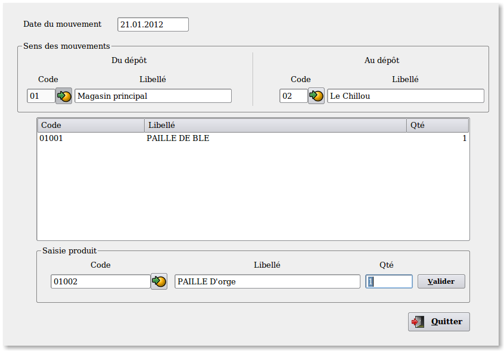
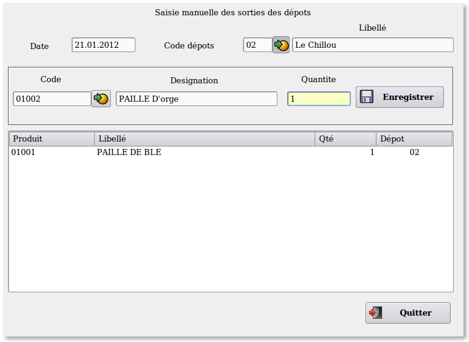
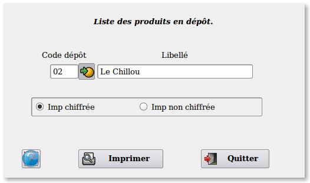
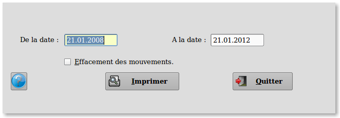
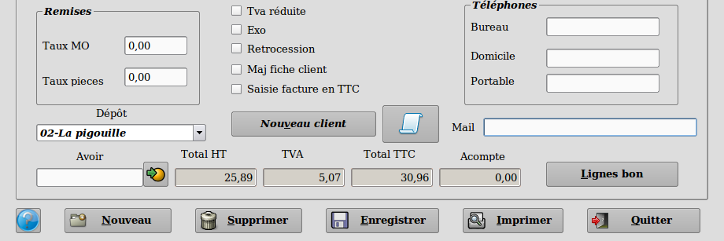
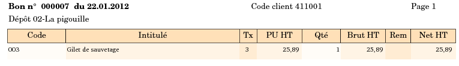
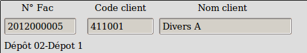

Généralités.
La
gestion du multi-dépôts est activée par le menu des préférences. Elle
est ensuite accessible par le menu "Stock"
==> "Dépôts".
Le stock principal nommé "Magasin
principal" est immuable et ne peut pas être supprimé.
On peut créer autant de dépôts qu'on le
souhaite.
La gestion du multi-dépôts permet de
faire des mouvements de stock
entre plusieurs lieux de stockage, dans un sens ou dans l'autre. Elle
permet aussi de faire des mouvements de stock exceptionnels sur
l'ensemble des dépots sauf sur le dépôt principal. Pour ce dernier on
passera par l'option habituelle des régularisations de stock.
La gestion du multi-dépôts permet aussi
de connaitre le stock de chaque dépôt, à partir de la fiche produit en
faisant un double-clic sur la zone "Qté stock".
Création, modification et suppression des dépôts.
Accessible par l'option "Stock"
==> "Dépôts" ==> "Table des dépôts".
Le dépôt 01 est le magasin principal c'est a dire la
société sur laquelle on travaille. Il est créé automatiquement par le
programme et ne peut pas être supprimé. On peut cependant modifier
ses coordonnées.
Le nombre de dépôts n'est pas limité.
On ne peut supprimer un dépôt que si aucun produit
n'est présent sinon on aura un message d'alerte.
La suppression d'un dépôt efface les produits de la
liste des mouvements de stock. Il faut donc penser a imprimer les
mouvements de stock avant de faire la suppression d'un dépôt.
Mouvements
inter dépôts.

Accessible par l'option "Stock"
==> "Dépôts" ==> "Transfert dépôts".
Le transfert des produits peut s'effectuer dans n'importe
sens. Dépôt principal vers dépôts secondaires ou dépôts secondaire vers
dépôt principal. Un contrôle est effectué pour éviter de faire des
mouvements sur un même dépôt.
L'enregistrement de chaque ligne de produit (touche "Valider" ) mouvemente la base de donnée.
Changer le dépôt d'origine ou le dépôt d'arrivée va
remettre à blanc les zones de saisie.
Sorties
manuelles.

Accessible par l'option "Stock" ==> "Dépôts" ==> "Sorties
manuelles des dépôts".
Cette option permet de faire des sorties manuelles. Elles correspond
aux mouvements de stock exceptionnels en sortie seulement car on ne
peut pas faire d'entrée.
On ne
peut faire des mouvements que si le produit est présent dans le dépôt.
On ne
peut pas faire de mouvements sur le dépôt principal (code 01). Si on
doit faire des mouvements de stocks exceptionnels sur le dépôt
principal on passera par l'option habituelle "Stock" ==> "Régularisations" .
Changer de dépôt remet à blanc les zones de saisie.
Impressions des stocks
dépôts.

Accessible par l'option "Stock" ==> "Dépôts" ==> "Impressions"
==> "Impressions stock dépôts".
Cette option permet d'imprimer un état des produits en stock pour
chaque dépôt.
On
peut faire une impression chiffrée ou non chiffrée.
Impressions des mouvements de
stock.

Accessible par l'option "Stock" ==> "Dépôts" ==> "Impressions"
==> "Impressions des mouvements".
Cette option permet d'imprimer un état des sorties
de stock pour chaque dépôt.
On peut faire une impression pour une période choisie.
On peut effacer les mouvements après l'impression. Il faut faire cette
opération au moins une fois en début d'exercice afin d'effacer les
mouvements de l'exercice précédent.
Facturation.

La gestion des dépôts permet de facturer les
produits pour un dépôt. La facturation mettra à jour les stocks du
dépôt ainsi que les historiques des mouvements pour les dépôts
concernés.
Si l'option "Gestion des dépôts" est activée dans les préférences alors, en saisie des documents, on aura une combobox qui permettra la saisie d'un code dépôt.
La
saisie des produits se fera alors normalement et mettra le stock du
dépôt à jour. On peut travailler avec n'importe quel produit et pas
seulement avec les produits présents dans le dépôt. Si le produit n'est
pas présent dans le dépôt alors sa quantité sera négative. Il n'y a
aucun blocage.
A
l'impression des documents le code et le nom du dépôt s'incriront sous
le numéro du document.

Les historiques des mouvements seront mis à jour à l'impression des
factures et on pourra les retrouver par l'option "Stock" ==> "Dépôts" ==> "Impressions"
==> "Impressions des mouvements".

Dans les factures archivées on conservera la trace
du dépôt. Celle-ci s'affichera juste sous le numéro de facture.
----------------------------------------------------------------------------------------------------------------------
Retour
en haut de la page
Retour a l'index